تشخيص دقيق
فحوصات حديثة وقراءة متأنية للنتائج قبل أي قرار علاجي.
استشاري أمراض القلب والأوعية الدموية
تشخيص دقيق بأحدث الأجهزة، وخطة علاج واضحة تفهمها، ومتابعة مستمرة معك خطوة بخطوة. احجز موعدك في أقل من دقيقة.

لماذا أيوب للقلب
نهتم بالتفاصيل الصغيرة، لأن صحة القلب لا تحتمل التخمين.
فحوصات حديثة وقراءة متأنية للنتائج قبل أي قرار علاجي.
نشرح لك حالتك وخطة العلاج بلغة بسيطة، وتخرج وأنت فاهم كل خطوة.
رسم القلب والإيكو والهولتر داخل العيادة، بدون تنقّل بين المراكز.
نتابع معك بعد الزيارة على واتساب لضبط العلاج والاطمئنان عليك.
خدماتنا
اختر الخدمة المناسبة لك، أو احجز كشفًا وسيحدد الطبيب الفحوصات التي تحتاجها فعلًا.
تقييم شامل لأعراض مثل ألم الصدر وضيق التنفس وخفقان القلب، مع خطة علاج واضحة.
احجز هذه الخدمةفحص سريع وغير مؤلم يسجّل كهرباء القلب ويكشف اضطرابات النبض وعلامات ضعف تروية القلب.
احجز هذه الخدمةتصوير بالموجات فوق الصوتية لتقييم عضلة القلب والصمامات وقوة ضخ الدم.
احجز هذه الخدمةجهاز صغير تحمله يومًا كاملًا لتسجيل نبض القلب أثناء حياتك الطبيعية.
احجز هذه الخدمةاختبار على جهاز المشي لتقييم أداء القلب تحت المجهود والمساعدة في اكتشاف ضيق الشرايين التاجية.
احجز هذه الخدمةضبط ومتابعة ضغط الدم ودهون الدم لتقليل خطر الجلطات وحماية القلب على المدى الطويل.
احجز هذه الخدمةفحص القلب وإصدار تقرير لياقة قلبية قبل أي عملية جراحية.
احجز هذه الخدمةمتابعة دورية لحالات ضعف عضلة القلب والدعامات واضطرابات النبض، مع ضبط الأدوية.
احجز هذه الخدمةتعرّف على الطبيب
استشاري أمراض القلب والأوعية الدموية
خبرة تزيد على 15 عامًا في تشخيص وعلاج أمراض القلب. يؤمن بأن المريض شريك في القرار، لذلك يخصص وقتًا كافيًا لشرح الحالة والإجابة عن كل أسئلتك.
احجز موعدك
اترك بياناتك وسنتواصل معك لتأكيد أقرب موعد مناسب. الحجز مجاني وبدون أي التزام.
املأ نموذج الحجز في أقل من دقيقة.
نتواصل معك لتأكيد اليوم والساعة المناسبين لك.
بدون انتظار طويل، وتخرج بتشخيص واضح وخطة علاج.
شكرًا ، سنتواصل معك قريبًا لتأكيد موعدك. لو لم يفتح واتساب تلقائيًا، اضغط الزر بالأسفل.
الأسئلة الشائعة
لا، يمكنك الحجز مباشرة من نموذج الحجز أو عبر واتساب دون أي تحويل.
أحضر قائمة بأدويتك الحالية، وأي تحاليل أو رسم قلب أو إيكو سابق، وتقارير العمليات إن وجدت.
رسم القلب والإيكو لا يحتاجان صيامًا. قبل رسم القلب بالمجهود يُفضّل تجنب الوجبات الثقيلة لمدة ساعتين وارتداء ملابس وحذاء مريحين، وسنرسل لك التعليمات كاملة عند تأكيد الموعد.
الكشف يستغرق عادة من 20 إلى 30 دقيقة، ويزيد الوقت إذا احتجت إيكو أو رسم قلب في نفس الزيارة.
رسم القلب والإيكو والهولتر فحوصات آمنة وغير مؤلمة ولا تستخدم أي إشعاع، واختبار المجهود يتم تحت إشراف طبي كامل.
بالتأكيد، راسلنا على واتساب أو اتصل بنا قبل الموعد بوقت كافٍ وسنرتب لك موعدًا آخر.
إذا شعرت بألم شديد أو ضغط في الصدر يمتد إلى الذراع أو الفك، أو ضيق تنفس مفاجئ، أو إغماء، اتصل بالإسعاف على 123 أو توجّه لأقرب طوارئ فورًا ولا تنتظر موعد العيادة.
احجز الآن أو راسلنا على واتساب، وسنرد عليك خلال دقائق في مواعيد العمل.
تواصل معنا